2025-02-26 其他
團結大台灣 布局全世界 向全民報告重大施政方向
團結大台灣 布局全世界，向全民報告重大施政方向
2024年的台灣，是「在整合中進步，在調適中豐收」的一年：經濟成長率達4.3%，台股衝破兩萬點，國內外科技大廠紛紛加碼投資，CPI年增率控制在2.18%，失業率亦為24年來新低。
不過，當前迎面而來的五大挑戰，包含人口對策、打詐反毒、人才人力、平穩物價和能源轉型，都必須由政府落實八大國家希望工程，讓2025年成為延續經濟榮景，開創大發展、大溫暖，壯大台灣的一年。
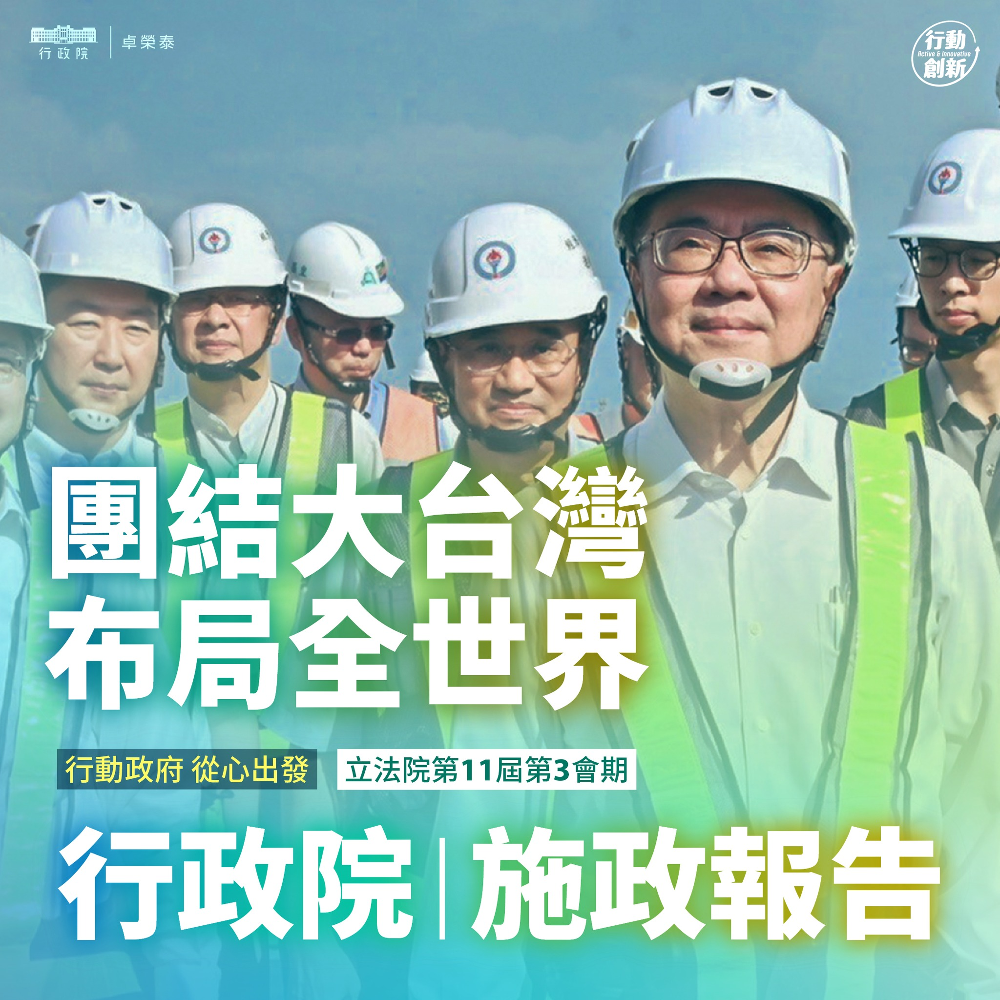
面對全球局勢快速變遷、各項嚴峻挑戰紛至沓來，我國有最佳的戰略地位：有先進科技領航，中小微企業轉型，及厚實的公共衛生體系，多元文化底蘊，更有高效率的生產力，及和諧的勞資關係。
只要朝野一致，攜手合作，必能「團結大台灣、布局全世界」，開創壯大台灣新時代的顛峰！
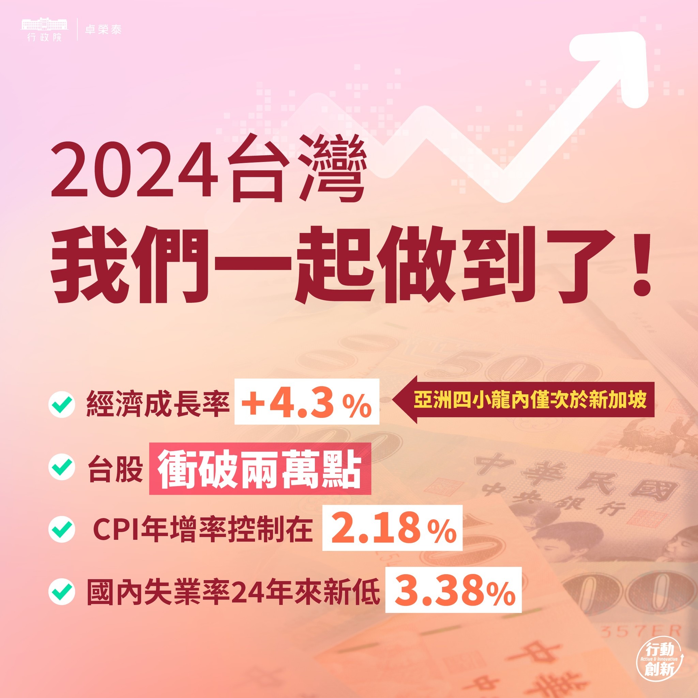
在國人辛勤努力及產業界合作發展之下，2024年的台灣是「在整合中進步，在調適中豐收」的一年：－我國經濟成長率達4.3％，在亞洲四小龍內僅次於新加坡
－台股衝破2萬點，全年指數上漲28.47％
－民間固定投資突破5兆元，國內外科技大廠紛紛加碼對臺投資，包括微軟、亞馬遜、輝達、超微、ASML、台灣美光等
－CPI年增率控制在2.18％
－國內失業率3.38％，為24年來新低
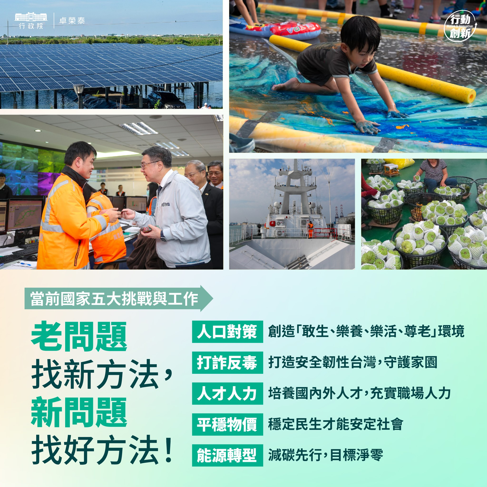
人口對策：根據國發會最新推估，我國生育率及總人口持續下降，至2030年將開始少於2,300萬人。在超高齡社會及少子女化雙重衝擊下，將同時面臨提高出生率及照顧家中幼兒、長輩的挑戰。產業亦須解決未來勞動力供需問題；隨著社會福利支出增加，政府亦須加速推動財政穩健措施，才能確保國家永續發展。敢生、能養、樂活、尊老，是國家的責任。擴大社會與醫療投資，減輕家庭負擔，透過創新經濟帶動未來成長，促進產業轉型並建設智慧國家，和藉由均衡縣市發展來實踐在地希望，都是在人口結構翻轉下，我們勢必要推動的新政策、新建設。
打詐反毒：就當前國內安全，社會持續進步，犯罪型態卻也不斷翻新。各項日新月異的詐騙手法，包含社群平台假投資、網路購物詐騙、假交友真詐財等，已成為國人最擔憂的治安問題。而五花八門的新興毒品入侵校園，也易使青少年誤入歧途，造成健康及社會的危害。
強化治安，打詐反毒，打造韌性的台灣，才能提升人民福祉。
人才人力：根據主計總處統計，去年全國受僱員工人數超過845萬，廣大勞工不僅支持著家庭生活，也支持著景氣繁榮。然而，人才的期待與職務的需求，卻不一定能夠對焦。像是學校所教的技能，能否成為社會新鮮人工作的動能？AI快速發展的時代，百工百業的勞工是否都能受惠？營建工程業、住宿餐飲業、運輸倉儲業等基層職缺，該如何順利招募？醫療照顧及家庭看護等需求不斷提升，是否有足夠人力因應等，都是現階段亟需面對的問題。
政府為全國軍公教人員加薪之外，亦鼓勵企業提升勞工的薪資；積極對接產業招募的需求，幫助中小微企業順利轉型，以加速邁向人工智慧全面應用的時代。未來新的人才與人力政策，必須要能為勞工兼顧理想與現實，為產業提供人才和資源，讓不同產業類別都能滿足勞動力供需，才能帶動台灣經濟持續成長並與全民共享。
平穩物價：國內市場的供需，易受到天災、氣候、節慶影響，也常因國際原物料價格而波動。維繫民生物價穩定，更是政府讓國人安心的重要責任。
我們會精準掌握國際原物料情勢及國內民生商品價格變動情形，並嚴格查辦壟斷、囤積、哄抬情事，確保物資供應無虞，以及民生物價平穩，達到將消費者物價指數年增率維持在2％以下之目標。
能源轉型：隨著臺商及國外大廠擴大對臺投資及半導體、人工智慧持續快速發展，確保能源供給的安全穩定，不僅是民生所需，也是產業發展及國家安全的重要基礎。台灣身為全球技術供應鏈的關鍵角色，必須擴大氣候行動，增加減碳力度，提升產業國際競爭力。
我們必須澈底落實第二次能源轉型，發展多元綠能，深化產業節能，開發先進儲能，並透過跨部會、跨領域的積極合作，與民間攜手推動以「減碳先行、目標淨零」的能源策略，為下一代綠色成長及2050淨零轉型循序漸進。
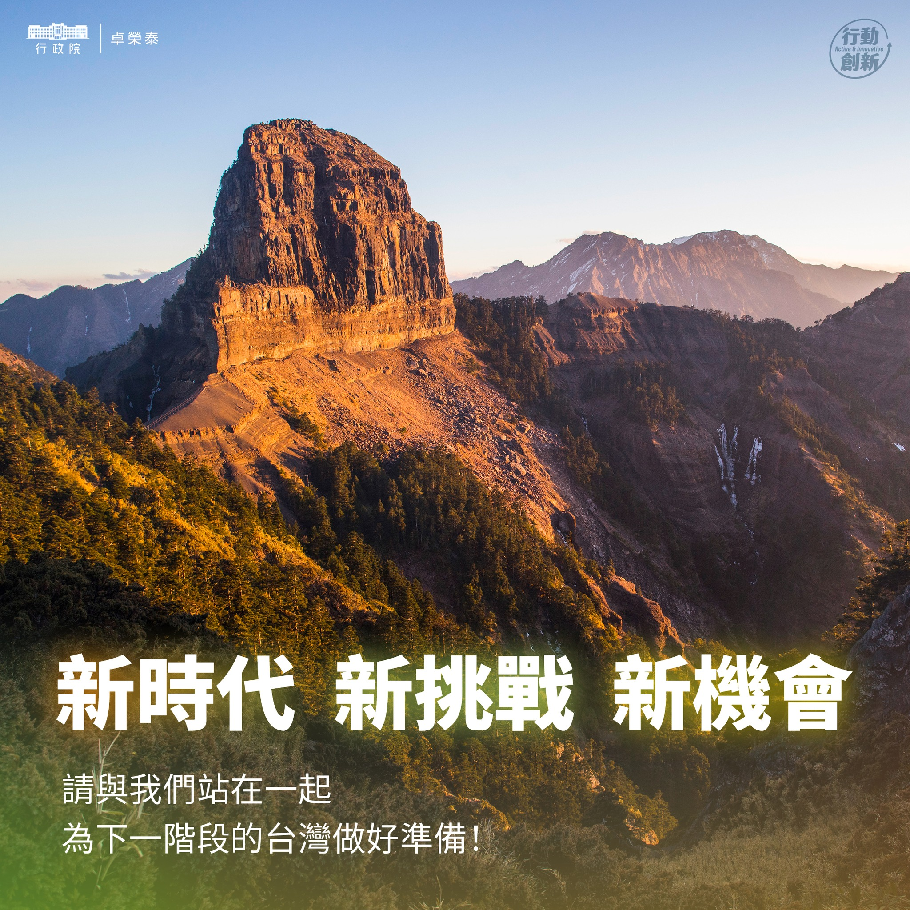
為下一階段的台灣做好準備––我們會為青年擴大社會照顧，為產業推動創新經濟，為永續開發多元綠能，為人民打造健康台灣，為均衡台灣促進城鄉發展，為國家形象營造台灣國際品牌，為多元族群守護文化及權益，為壯大台灣捍衛安全、強化國防！
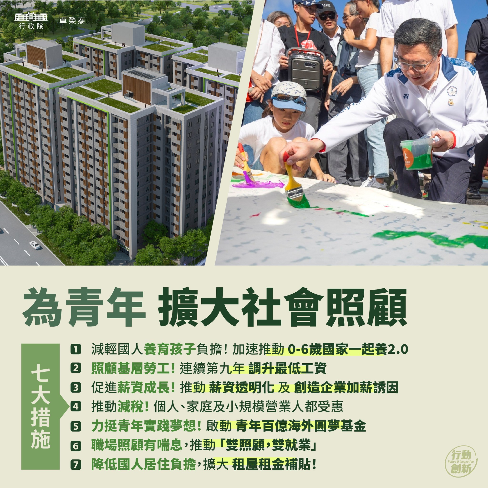
為青年擴大社會照顧，我們推動七大措施：－為減輕年輕爸媽養育孩子的負擔，政府去年起實施公立幼兒園平日課後延長及寒暑假照顧服務，持續推動「0-6歲國家一起養2.0」
－為讓高中職及大專校院學生皆有公平就學機會，我們持續縮短公私立大專學雜費差距，落實高中職免學費，讓經濟弱勢的學生同樣享有教育平權
－為照顧剛出社會的年輕人，今年已將最低工資調整為2萬8,590元、時薪190元，調幅約4.08％及3.8％，為連續第9年調漲；全國軍公教薪資待遇調整3％，更期能帶動民間企業薪資成長；規劃透過推動薪資透明化、實質鼓勵企業加薪等創新策略，以多元方式提升國內整體薪資
－持續推動減稅，調高2024年基本生活費及2024年度綜所稅免稅額、標準扣除額及各項特別扣除額，今年5月即可適用，約687萬戶受惠。以青壯年雙親的四口之家為例，雙薪育有2名6歲以下幼兒的家庭，年所得在146.1萬元以下可免稅
－為了讓青年勇於向世界追夢，核定「青年百億海外圓夢基金計畫」，提供15歲至30歲青年多元實踐途徑，個案最高可補助200萬元，讓經濟弱勢的年輕人同樣有機會實踐理想人生
－為滿足員工彈性需求，推動「雙照顧、雙就業」，完善公共支持體系，逐年提高婦女、中高齡者及高齡者的勞動參與率，鼓勵他們重返工作現場
－為擴大照顧青年族群，落實居住平權，加大力道與民間合辦興建各式社會住宅或青年住宅，政府持續推動「百萬戶租屋家庭支持計畫」及「300億元中央擴大租金補貼專案」，並將實施期限延長至2026年；提出「新青安貸款優化措施」，強化公股銀行貸前審核及貸後稽查，有效促進整體房市健全發展
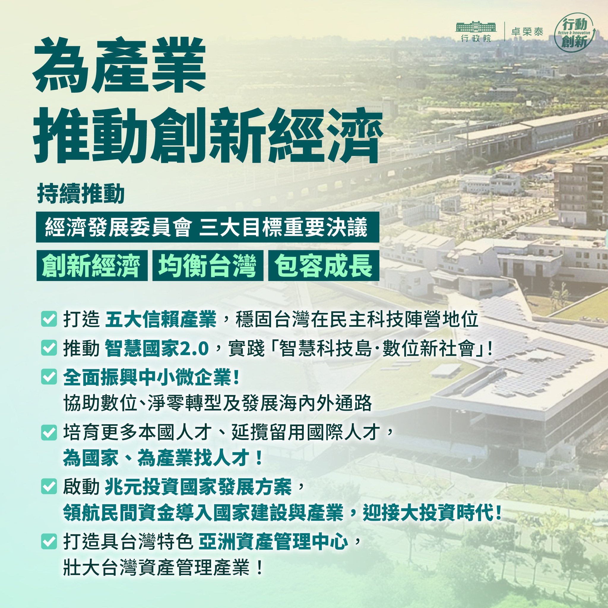
落實經發會「創新經濟」、「包容成長」及「均衡台灣」，我們正落實各項重要決議：－打造五大信賴產業，透過創新驅動帶動百工百業發展，預計2028年可新增半導體產值2.66兆元，促使無人機產值成長10倍達300億元
－啟動「智慧國家2.0」，以4年為期，透過「智慧科技、智慧產業、智慧治理、智慧共融」四大分組，實踐「智慧科技島．數位新社會」的願景
－投入116億元，推動「中小微企業多元振興發展計畫」
－核定「國家人才競爭力躍升方案」，打造半導體、電動車、智慧機械與電網、離岸風電等20座區域產業人才與技術培育基地
－啟動「兆元投資國家發展方案」，成立院級促參平台，將引進兆元資金，投資在台灣重大建設及產業
－推動具備台灣特色的「亞洲資產管理中心」，目前已選定高雄設立地方資產管理試辦專區，提供金融機構進駐，試辦高資產客戶業務、國際金融業務及跨境金融服務。此外，政府也已預告修正「銀行辦理高資產客戶適用之金融商品及服務管理辦法」，降低業務限制，鼓勵更多銀行積極拓展財富管理市場
－推動創新板新制，全面取消創新板合格投資人限制，讓一般投資人都能夠參與，協助優質新創企業發展。此外，好的政策繼續推，政府亦推動修法，延長現股當沖證交稅稅率減半3年，維持交易動能及促進證券市場穩定發展
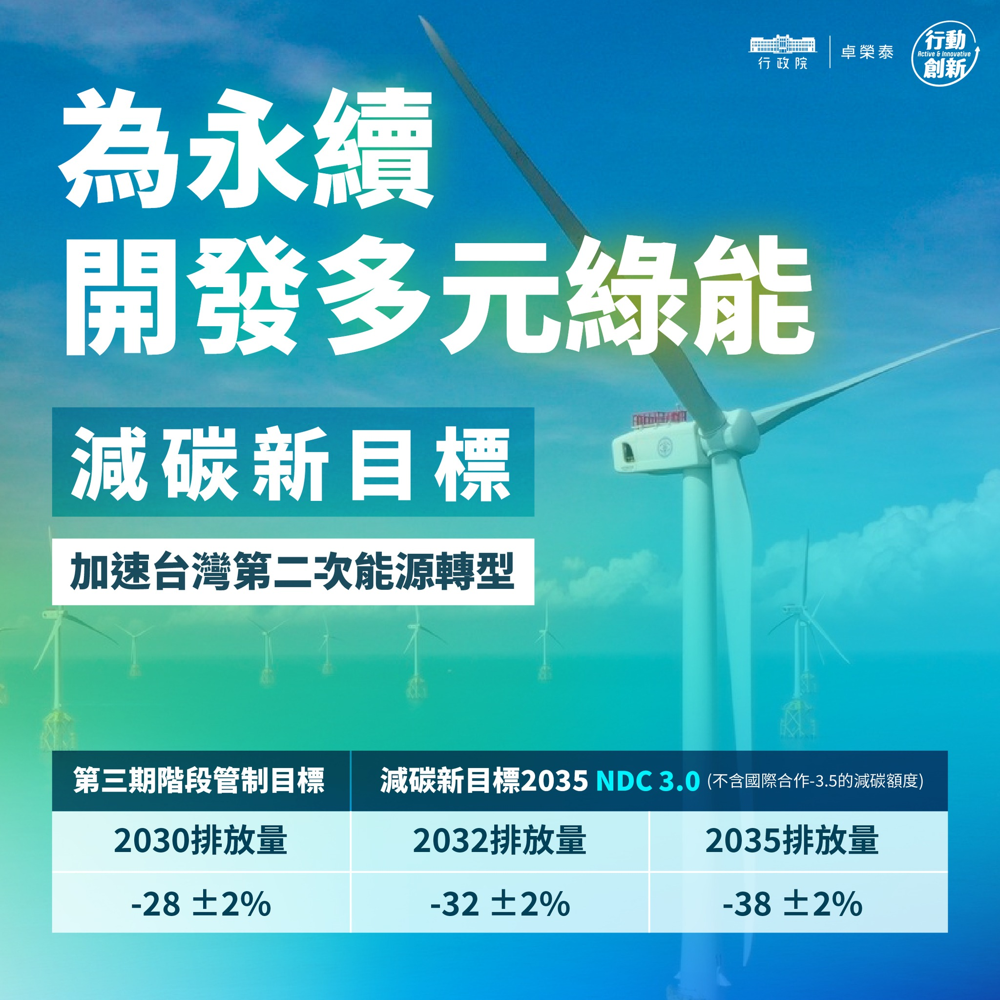
為環境永續發展努力，加速接軌國際減碳趨勢：－環境部已提出「第三期溫室氣體階段管制目標」草案，2030年相較2005年減量目標從原先的「24％加減1％」，提升為「28％加減2％」。總統府國家氣候變遷對策委員會也決議要提出更加積極的減碳新目標，預計我國NDC（國家自定貢獻）3.0版的減量目標，2032年為「32％加減2％」，2035年則為「38％加減2％」
－政府已公告碳費制度3項配套子法及徵收費率，並自今年起正式實施碳費制度，預計有281家企業納入收費對象，以分階段徵收碳費及優惠費率，促使企業加速低碳轉型
－成立永續長聯盟，由中央各部會及地方政府指派副首長擔任機關永續長，負責優先完成內部碳盤查、公務車全面電動化、完成建築能效標示、提升綠色採購等永續轉型策略及措施
－持續增加再生能源佔比，加速推動太陽光電、離岸風電、地熱能、小水力發電等多元前瞻綠能；推動深度節能，由公營企業先行，擴大ESCO服務產業能量；打擊綠能犯罪
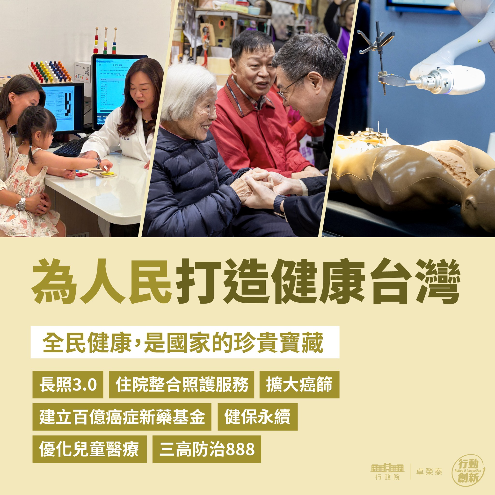
健康是文明國家的象徵，也是幸福社會的基礎。全民健保已開辦30年，本院將推動十大「健康台灣」相關新制，主要項目包含：－將提出「長照3.0」完整計畫，持續落實在地安老，強化醫療及照顧系統的銜接及整合，並增進對中重症的照顧，及時接住被照顧者及照顧者
－今年起擴大推動「住院整合照護服務」、第2期「優化兒童醫療照護計畫」及15-45歲心理健康支持方案，並於偏鄉擴大試辦「全人整合照護執行方案」
－推動「擴大癌症篩檢服務」，針對公費肺癌、大腸癌、乳癌、子宮頸癌之篩檢對象，並新增人類乳突病毒（HPV）檢測服務，下修適用至30歲以上族群；成立「百億癌症新藥基金」；同時推動「護理人力政策整備12項策略中長程計畫」，與考試院成立院際平台，以「考用合一」精進國家考試作業，增補護理人力
－推動「三高防治888計畫」，於2032年達到將80％三高病友加入照護網、照護網內8成三高患者接受生活習慣諮詢，讓三高控制率達80％等目標，保障國人心血管健康
－促進健保永續，提供民眾最高品質的醫療照顧，本院已核定122億元經費，將去年健保點值補足到至少0.9元，並於今年編列336億元挹注健保，穩健健保財務促進健保永續，提供民眾最高品質的醫療照顧，本院已核定122億元經費，將去年健保點值補足到至少0.9元，並於今年編列336億元挹注健保，穩健健保財務
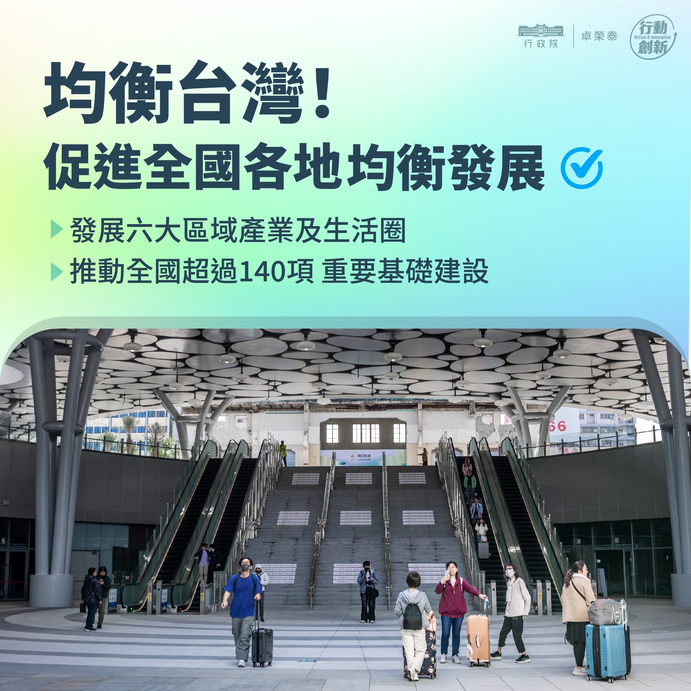
為促進「均衡台灣」：－已規劃六大區域產業與生活圈，包括北北基宜「首都圈黃金廊帶」、桃竹苗「桃竹苗大矽谷」、中彰投雲「精密智慧新核心」、嘉南高屏「大南方新矽谷」、宜花東屏南「東部慢活城鄉」及金馬澎「低碳樂活離島」
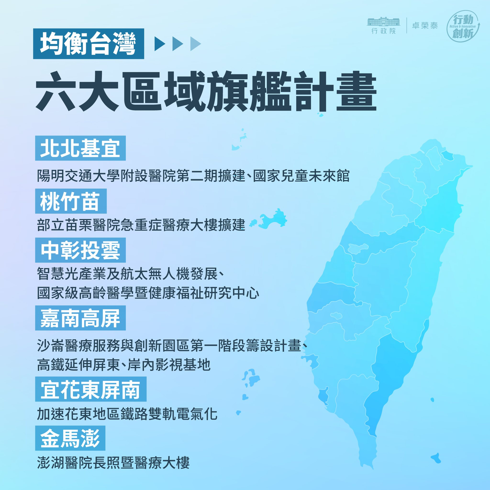
為落實地方重要基礎建設，擇定各地旗艦計畫包含：陽明交通大學附設醫院第二期擴建、國家兒童未來館、部立苗栗醫院急重症醫療大樓擴建、智慧光產業及航太無人機發展、國家級高齡醫學暨健康福祉研究中心、沙崙醫療服務與創新園區第一階段籌設計畫、高鐵延伸屏東、岸內影視基地、加速花東地區鐵路雙軌電氣化、澎湖醫院長照暨醫療大樓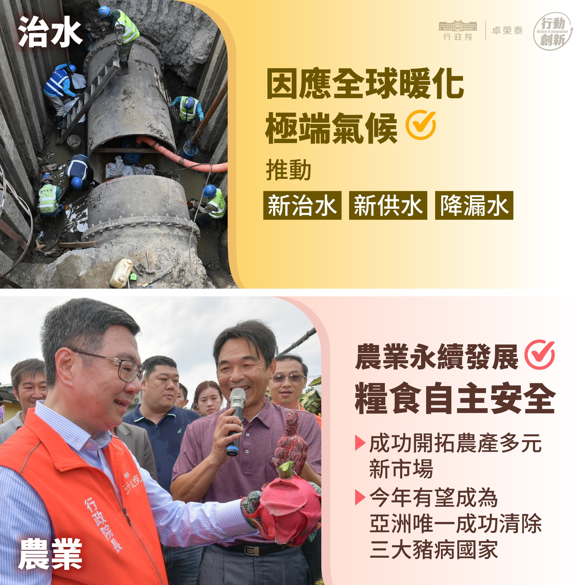
為使地方均衡發展：－編列整體治水預算達551億元，以系統性治水模式確保水資源充足及安全；持續推動「降低漏水率計畫」，2012至2024年每年減少漏水約5.22座湖山水庫水量
－台灣可望於今年率先成為亞洲唯一傳統豬瘟、口蹄疫及非洲豬瘟三大豬隻疫病的非疫區國家；成功開拓農產多元外銷市場，實質提升農民收益
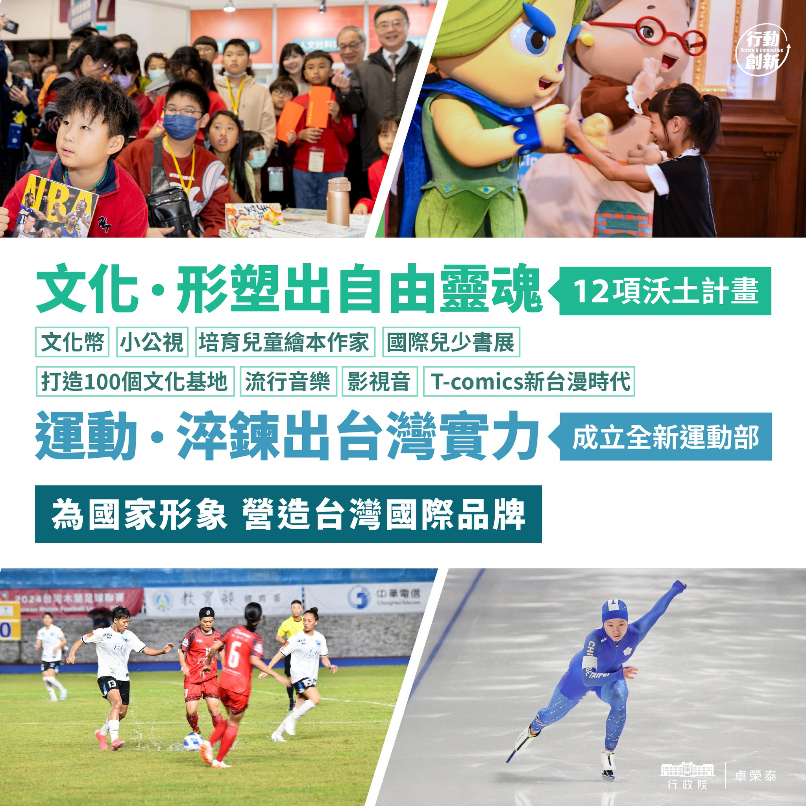
今年政府編列文化預算為歷年最高，將規劃推動12項「沃土計畫」，包含向下扎根，將文化幣向下延伸至13歲至15歲、成立「小公視」、繪本新秀計畫等，讓兒童和青少年的生活能輕鬆吸收藝文養分；將建立「100個文化基地」，打造與串連社造點、博物館、地方文化館、生活美學館、表演藝術、展覽場館、書店等成為文化基地，透過旅遊觀光形成有經濟規模的文化產業－成立全新的運動部，即將成立全新的運動部，下設全民運動署、國家運動訓練中心、國家運動科學中心、國家運動產業發展中心的「1部、1署、3中心」，廣邀包含選手在內的多元專業人才，全力落實運動部各大願景：適應運動、全民運動、體育競技、國際事務、運動產業
－促進疫後觀光復甦，持續推動跨部門運作與投入資源，突破千萬旅客來臺，振興國內觀光產業
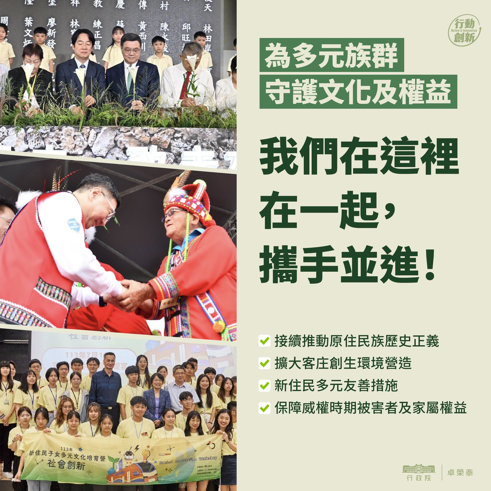
－接續總統府原轉會相關歷史正義法制化作業及執行工作，落實「原住民族基本法」，以原推會持續推動原住民希望工程－投入約11.8億元擴大客庄創生環境營造，打造客庄22處生活交流中心，並將於今年成立第1屆「客家青年諮詢委員會」，廣納不同世代觀點
－核定「通譯制度精進試辦計畫」，照顧新住民
－推動修正「威權統治時期國家不法行為被害者權利回復條例」保障受領人確實領取賠償金或返還之財產，且不影響其原有社福資格；送交「不義遺址保存條例」草案請立院審議中
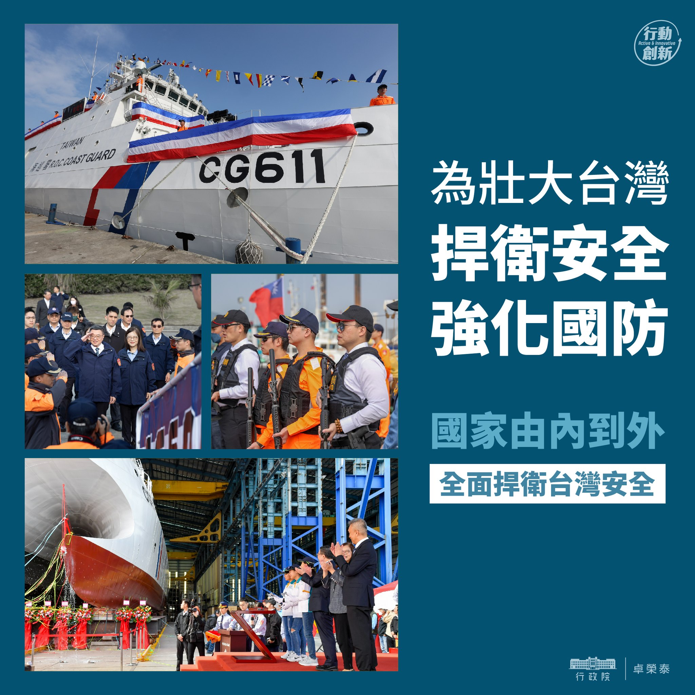
－針對國人與政府皆深惡痛絕的詐騙，行政院已成立打詐指揮中心，今年起將完備「打詐四法」的配套子法，推動「新世代打擊詐欺策略行動綱領2.0」，並落實網路廣告平台業者之廣告實名制，強化打詐儀錶板功能。未來我們會與各平台業者確保溝通管道暢通，要求落地管理並加強內部管控；同時規劃改善金融及地政流程，以及研議快速取回遭詐財產的法律途徑，減少民眾財產損失－為防制新興毒品危害，政府已將依托咪酯改列為第二級毒品，提升壓制力量及刑度，避免毒煙戕害青少年及國人健康。今年起我們投入150億元，推動「新世代反毒策略行動綱領」第3期，以科技加強緝毒、阻絕邊境、提升檢驗量能、防止毒品入侵校園等措施，達到無毒家園及無毒校園願景
－持續推動「永續提升人行安全計畫」，已完成789處易肇事路口、2,978處省道路口改善，短期內各項事故數據均有減少，將持續追蹤辦理成效並積極改善道路交通安全。「TPASS 2.0」上路，為公共運輸常客提供更多優惠，每月使用電子票證搭乘達11次以上者，最高可獲得40％的乘車金額回饋，鼓勵民眾使用安全、舒適、便利的大眾交通工具
－行政院已公布公務機關原則全面禁用DeepSeek AI服務，並務必遵循「危害國家資通安全產品限制使用原則」。同時，為確保對外通訊順暢，避免因灰色地帶侵擾受損，行政院已核定將臺馬海纜等10條國內海纜，列入關鍵基礎設施，投入更多資源維護，必要時啟動備援措施及加速修復速度
－逐步完成「籌建海巡艦艇發展計畫」141艘目標，投入捍衛海疆、保衛國土安全任務
－持續推動國機國造，提升整體作戰能力，積極落實總統「和平四大支柱行動方案」
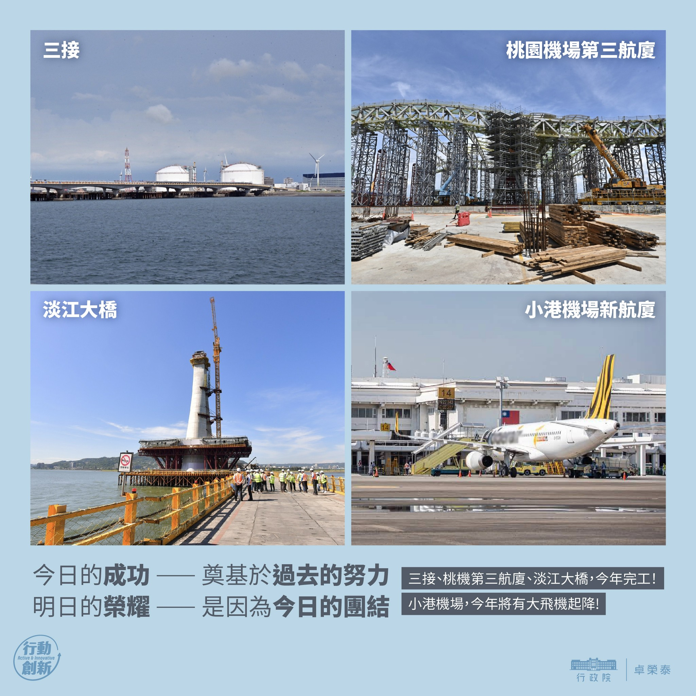
去年520上任以來，我特別關切中油公司天然氣三接工程、桃園機場第三航廈工程，以及淡江大橋建設計畫的進度。這三大工程，都是從我過去在行政團隊服務時，與同仁團結努力、克服重重困難，終於將分別在今年上半年、今年年中及今年年底開花結果的北部重大建設。同時，政府正積極推動「南北雙空港計畫」，扮演關鍵樞紐的小港機場，將是實現「大南方新矽谷」的基地及新南向的門戶。今年小港機場將有大型飛機起降，直飛美國不是夢。中央支持的「高雄小港機場新航廈建設」，第一期預計於2032年如期如質完工，帶動南台灣整體發展。
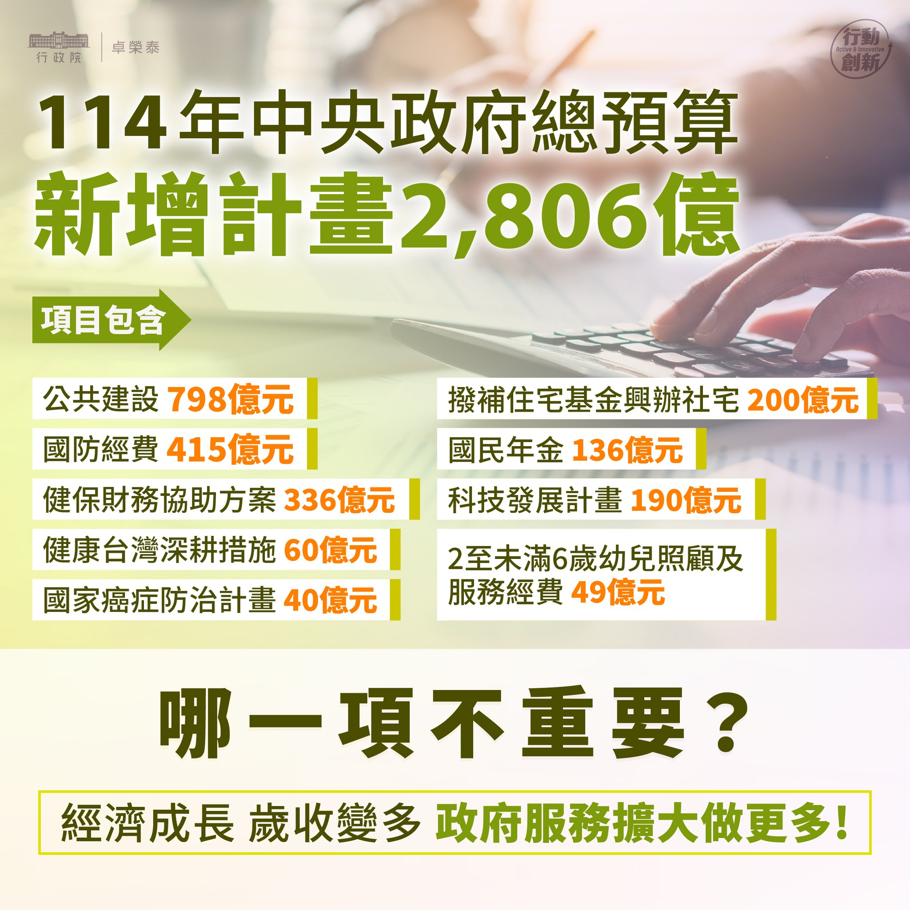
今年度中央政府總預算規模為3兆1,325億元，較去年增加2,806億元，是因為有許多新增項目，包含公共建設798億元、國防經費415億元、健保財務協助方案336億元、健康台灣深耕措施60億元、國家癌症防治計畫40億元、撥補住宅基金興辦社宅等200億元、國民年金136億元、科技發展計畫190億元，以及2歲至未滿6歲幼兒照顧及服務49億元等。當前經濟成長快速，公共服務量能也必須因應增加，政府有義務全力照顧、全速發展，以不辜負全體人民的努力。我始終堅信，朝野必須「和解共生」，才能順利推動各項福國利民的法案；兩岸關係應在對等、尊嚴原則下「和平共榮」，才能確保臺海和平穩定；台灣必須緊密與全世界積極互利合作，才能「合作共贏」。我與行政團隊一直秉持「誠意溝通、人民優先」的理念，與貴院及各位委員先進持續溝通，盼能在維護憲政秩序、捍衛人民憲法權利的基本前提下，為全體國人創造最大的福祉。